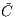
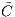
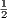

Open Quantum Systems Theory behind Quantarhei Package
Tomáš Mančal
Faculty of Mathematics and Physics, Charles University, Ke Karlovu 5,
121 16 Prague 2, Czech Republic
(Dated: October 6, 2016)
In this document, we summarize the theory of open quantum systems as it is implemented in
the Quantarhei package. Before it grows into a self-contained text, the following books should
be consulted to gat a full picture: Volkhard May and Oliver Kühn, Charge and Energy Transfer
in Molecular Systems, Wiley-VCH, Berlin, 2000 (and later editions), Shaul Mukamel, Principles
of Nonlinear Spectroscopy, Oxford University Press, Oxford, 1995 and Leonas Valkunas, Darius
Abramavicius and Tomáš Mančal, Molecular Excitation Dynamics and Relaxation, Wiley-VCH,
Weinheim, 2013.
CONTENTS
I. BATH CORRELATION FUNCTIONS AND SPECTRAL DENSITIES
A. Bath Correlation Function
Bath correlation function is defined as a two point correlation function of the bath part ΔV of the system-bath interaction
operator, i.e. as
where weq is the equilibrium bath density operator, UB(t) is the bath evolution operator and the trace is taken over
the bath degrees of freedom. The bath correlation function is a complex quantity and as such it has a real
part
and an imaginary part
so that
B. Spectral Density
A very important quantity is the Fourier transform of the bath correlation function
It is sometimes referred to as spectral density, but we will reserve this name for a different quantity. We will follow Ref.
[Mukamel1995]. The Fourier transform (ω) can be split into even and odd parts defined as
so that
 | (7) |
It can be shown (see [Mukamel1995]) that
and
Due to the relation between positive and negative frequency values of the Fourier transform of the bath correlation function,
we can define it completely through the odd function ′′(ω) which is a Fourier transform of the imaginary part of the
correlation function.
Spectral density
 | (10) |
II. STANDARD REDFIELD THEORY
In this section we will derive the standard Redfield relaxation tensor in a form which is implemented in Quantaρϵι.
A. General Derivation
B. Analytical Results
1. Homo-dimer
If both energy gap fluctuate with the same energy gap correlation function C(t), the rate Kab of the energy transfer from state
|b⟩ to state |a⟩ reads as
For a homodimer all coefficients |⟨b|n⟩|2 =  and the sum over n gives two contributions which are exactly the same. For an
overdumped Brownian oscillator spectral density we have
Given that for a homodimer ℏω12 = 2J we have
This formula is used to test the calculations of Redfield rates and of the Redfield tensor in Quantaρϵι.
2. Hetero-dimer
Appendix A: Microscopic Derivation of Spectral Density Symmetries
Here we will derive the Eqs. (8) and (9).